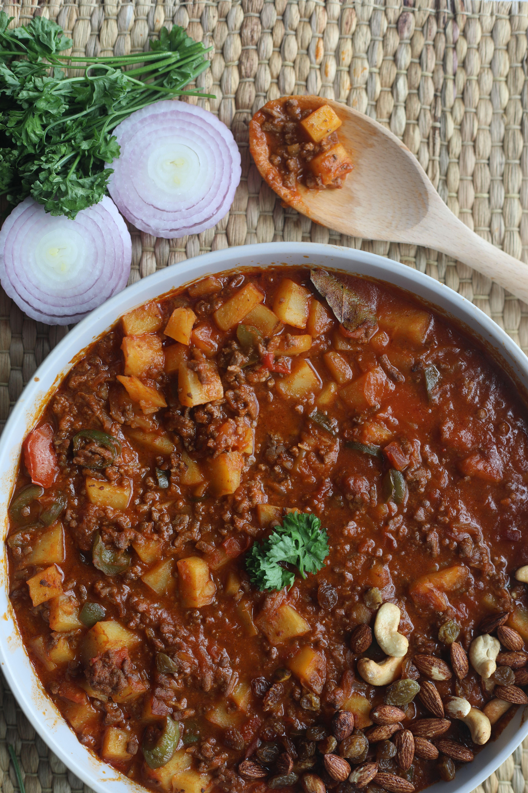

Description
Giniling Guisado is a Filipino dish made with ground pork or beef, tomato sauce, potatoes, carrots, and seasonings. It is a simple and flavorful meal commonly served with rice.
Ingredients
- 500 grams ground pork or beef
- 1 onion, chopped
- 3 cloves garlic, minced
- 2 tomatoes, chopped
- 1 potato, diced
- 1 carrot, diced
- 1 cup tomato sauce
- 1 cup water
- Salt and pepper to taste
- Cooking oil
Instructions
- Heat cooking oil in a pan.
- Sauté garlic, onion, and tomatoes.
- Add the ground meat and cook until browned.
- Pour in the tomato sauce and water.
- Add the potatoes and carrots.
- Simmer until the vegetables are tender and the meat is fully cooked.
- Season with salt and pepper.
- Serve warm with rice.
Recipe Information
| Preparation Time | Cooking Time | Servings |
|---|---|---|
| 15 minutes | 30 minutes | 4 people |
Recipe Feedback
Recipe Video
Watch this video for Giniling Guisado cooking inspiration.